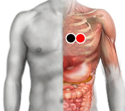
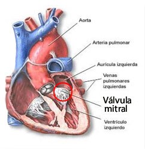

Válvula Mitral
Par
corazón - corazón

Generalidades:

El corazón humano está compuesto por cavidades, dos aurículas en la parte superior que reciben la sangre; y dos ventículos en la parte inferior que bombean la sangre hacia los pulmones (lado derecho) y hacia el resto de todo el cuerpo (lado izquierdo). Para que el sistema cardiovascular funcione de manera óptima permitiendo una buena oxigenación de todo el cuerpo se requiere que la sangre fluya en la dirección correcta, para lo cual existen una serie de válvulas. La válvula mitral es una de las más importantes ya que separa la aurícula del ventículo del lado izquierdo del corazón. Cuando funciona en forma deficiente un porcentaje de la sangre regresa a la aurícula en el momento de la sístole (contracción del corazón) Esto provoca un deficiente flujo sanguíneo, así como un sobreesfuerzo del músculo cardiaco, que a la larga puede afectar al corazón.
La enfermedad de la válvula mitral puede presentarse como:
Síntomas:
La enfermedad de la válvula mitral puede avanzar lentamente y muchas veces los síntomas no se hacen notar hasta que la condición está avanzada, ellos pueden ser:
Causas:
Pueden ser múltiples los factores de riesgo:
Tratamiento con biomagnetismo
No hay mucha información sobre este trastorno por lo que sugerimos al para corazón-corazón como primera opción a probar. También se pueden probar otros pares como corazón-riñón (Insuficiencia primaria) o riñón-corazón (estenosis).
Para brindar un tratamiento integral se recomienda, como siempre, un rastreo completo para detectar los patógenos que puedan estar afectando al corazón, así como probar los pares auxiliares para el sistema cardiovascular así como recomendar un cambio en la dieta y hábitos de ejercicio, considerando la edad y condición del consultante.
La visita a un cardiólogo es necesaria si los síntomas no ceden.